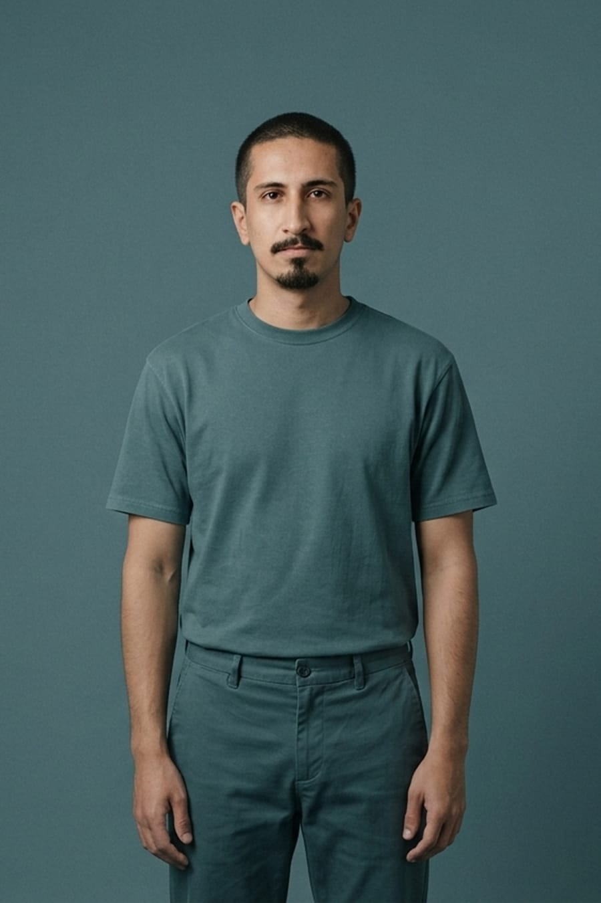

Portfolio, Leonardo Silva
- Design
- Produtos
- Serviços
- Pessoas
Adaptabilidade e Excelência
Foco em entender como as partes se relacionam em sistemas, escolher a melhor abordagem para cada problema e tomar decisões sustentáveis — sempre construindo junto com outras pessoas.